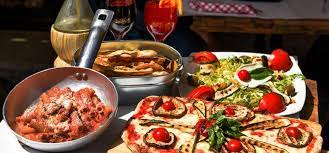

About Us
Welcome to our food recipe website! We are a team of passionate food enthusiasts who love exploring new flavors, experimenting with different ingredients, and sharing our culinary knowledge with the world. Our goal is to provide you with a wide range of delicious and diverse recipes that cater to all types of tastes and preferences. From comfort food classics to exotic international dishes, we believe that food is an art form that should be celebrated and enjoyed by everyone. At our core, we are committed to using fresh, high-quality ingredients and promoting sustainable and ethical food practices. We believe that cooking at home is not only healthier and more cost-effective than eating out, but it also allows you to have complete control over the ingredients you use and the flavors you create. Whether you're a novice cook or a seasoned pro, our user-friendly interface and step-by-step instructions make it easy for you to whip up a tasty meal in no time. Join us on our culinary journey and discover the joy of cooking from scratch!
Instructions:
Use the search bar to search for recipes. There are two options: Food recipes and Cocktail recipes

It will give you the best result, but you can still select other results on the "Other recipes" container, where images of them will be shown